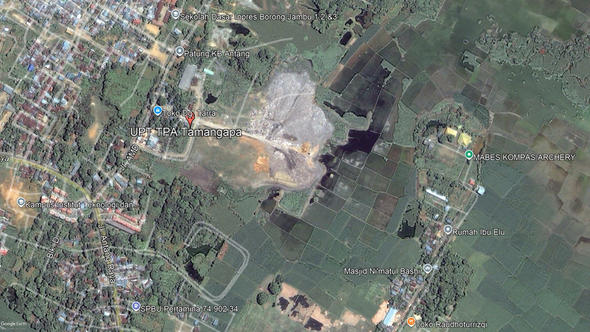
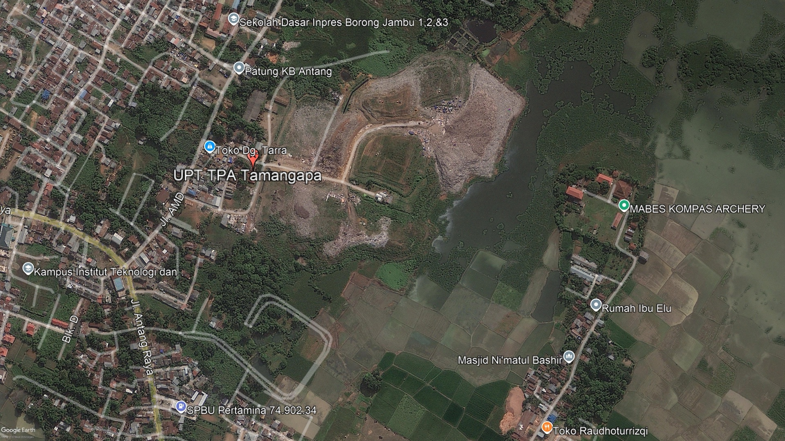
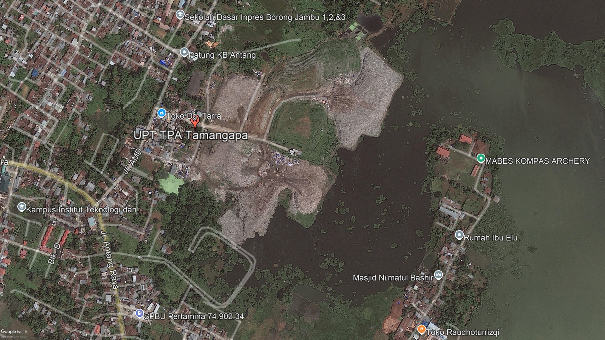
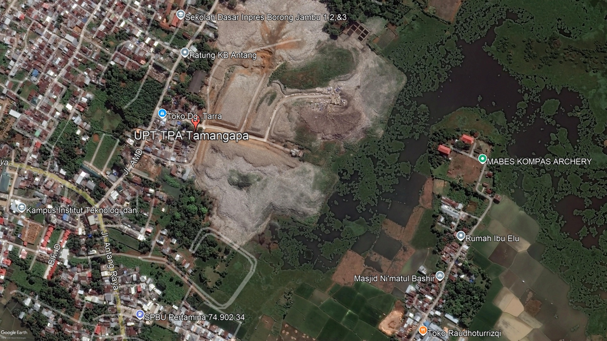
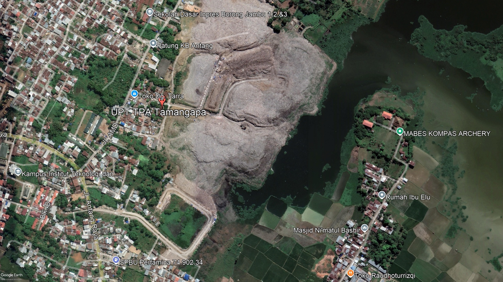
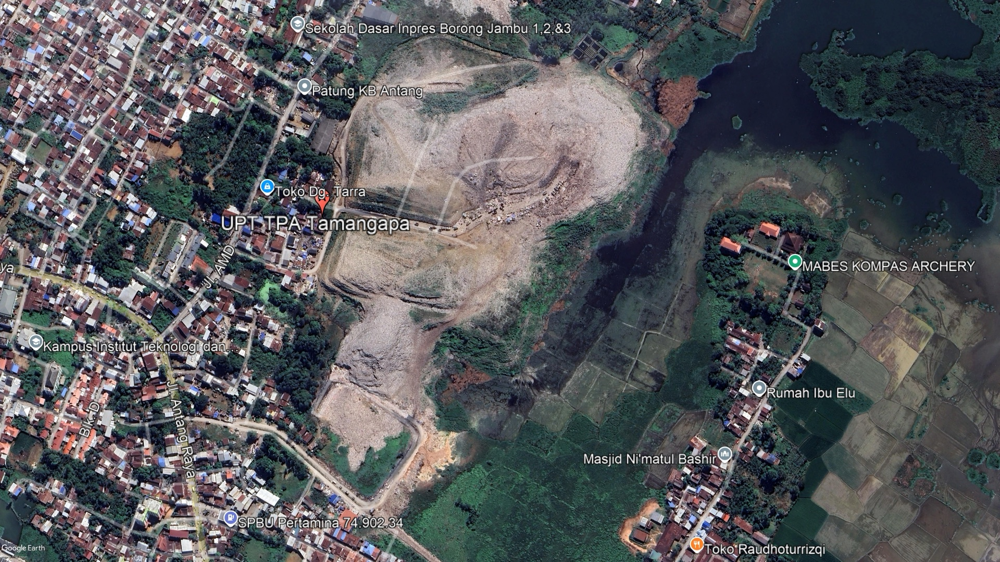
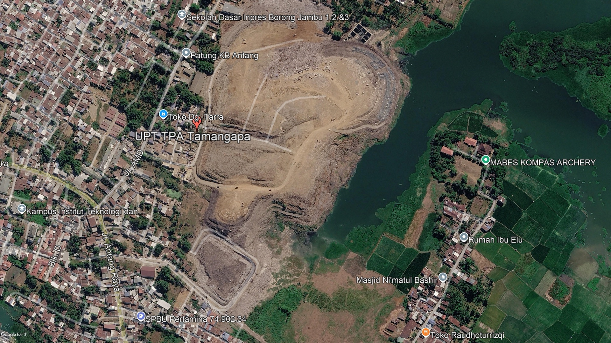

TPA Tamangapa resmi beroperasi. Warga sekitar mengatakan saat akan dibuka, pemerintah menyebut akan ada pembangunan pabrik. Bukan TPA. Belum ada citra satelit memadai saat itu, kawasan sekitar masih rawa isolasi.

Sampah mulai merangsek ke lahan pertanian.



Gundukan sampah terus meluas. Terutama ke arah utara dan selatan, makin mendekati pemukiman penduduk.

Luas area TPA kembali mengalami perluasan. Jalan di Bintang Lima juga mulai dibuka.

TPA over kapasitas. Makassar dinyatakan darurat sampah. Pada akhir 2025, dilakukan penambahan seluas 3 hektare. Jalur di Bintang Lima juga mulai dibuka.

Di awal tahun, sampah makin tidak terkendali. Sampah menggunung di dekat rumah warga, air lindinya bahkan menggenangi rumah warga.